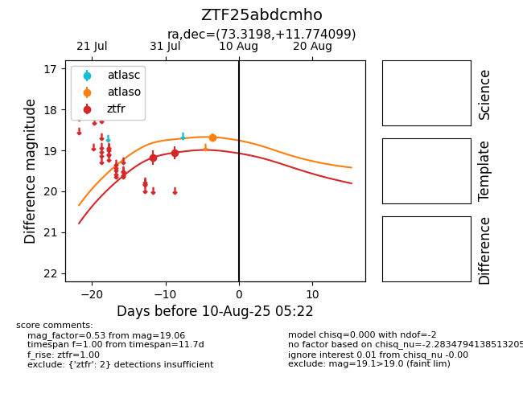

Target ZTF25abdcmho at 2025-08-05 23:02, see:
FINK: fink-portal.org/ZTF25abdcmho
Lasair: lasair-ztf.lsst.ac.uk/objects/ZTF25abdcmho
ALeRCE: alerce.online/object/ZTF25abdcmho
alt names
ZTF25abdcmho (ztf,fink)
coordinates:
equatorial (ra, dec) = (73.3198,+11.77410)
galactic (l, b) = (187.6822,-19.66439)
photometry
last ztfr=19.06
2 ztfr detections
